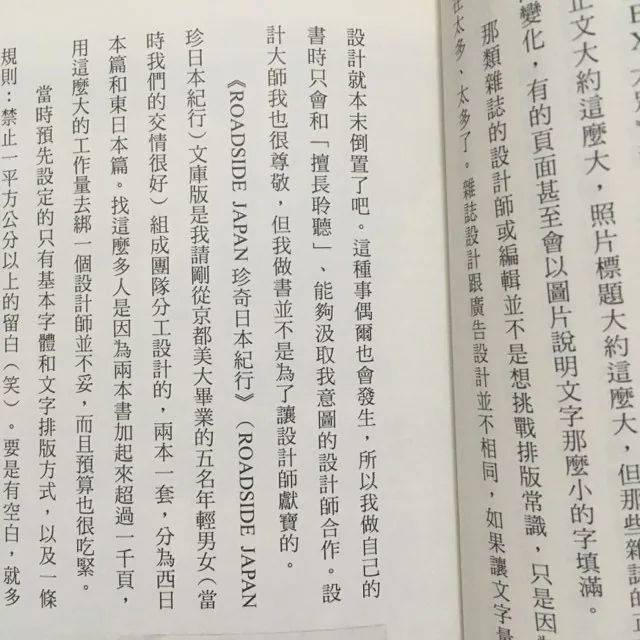
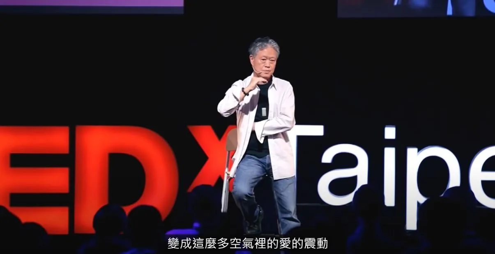

閱讀途中｜關於《圈外編輯》, 《未完成，黃華成》, 留十八分鐘給一首詩
上週六去看了展覽《未完成，黃華成》（只到11/8號！），週一開始看《圈外編輯》並短短幾天內快速地讀完。
不同時代的怪咖（稱讚意味）
都築響一某種程度上和黃華成相像，相似的觀念、並做了許多獨創而有趣的事，差別在於前者是編輯/報導者，而後者是創作者。不過，我認為決定企劃並且執行、報導什麼內容，也屬於一種創作；更進一步地說，我認為很多事都可以是創作，關鍵在於過程中是有沒有把自己的意識放在裡頭。
認識二者的差異是：黃華成是自其經歷、作品、友人口述中認識，但《圈外編輯》是都築響一以第一人稱闡述企劃成行的前因後果。口吻有點GY但又中肯，所以讀起來很爽XD

文字出現以前，詩是用唱的
書中其中一個段落，提到現代詩與歌的關係（詩歌）。
剛好週日和友人J見面，他提到開始學習寫詞的事，我便想到蔣勳曾在TED上〈留十八分鐘給自己〉，提到不同音韻在空氣中震動所呈現的音樂性與共鳴。分享給他的同時，我也才再重新聽一次。
每一個民族被稱為詩的，都是聲音的開始，並不是視覺的開始。⋯⋯如果今天的詩只給視覺，我們少掉了好多東西⋯⋯我們其實是用心，去共鳴了那個聲音，一波一波過來，像潮汐一樣的這個力量。
前陣子，覺察自己有傳達心意的障礙，而開始意圖練習時，我一直執著於必須用嘴巴說出來，而拒絕以寫信或傳訊息的方式代替，但始終不能解釋這個執著是因為什麼，只是覺得口語的力量是很強大的。
而蔣勳的話語，好像讓我突然看到了某個答案一樣。

（喜歡所有事物兜起來、不斷連結的過程。還想起了大學上課報告葉慈的〈The Lake Isle of Innisfree〉、最早接觸朗讀新詩的〈「肛交」之必要〉。）
留言
電子郵件不會公開，只用來辨識留言者。第一次留言會先經過審核，之後同一個電子郵件的留言會直接顯示。本留言區以 Cloudflare Turnstile 防止垃圾留言。